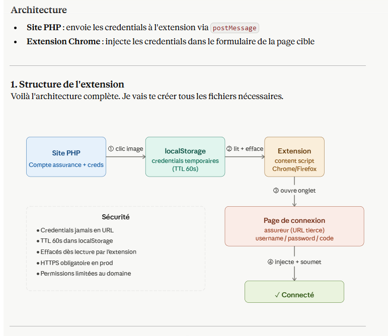

Présentation et évaluation de savoir-faire de suivi de projet
Cette partie permet de présenter et évaluer les savoir-faire de suivi de projet ...
Utiliser intelligemment des IA pour s'informer, corriger et perfectionner son code

Savoir-faire élémentaire : S'auto-former sur de nouveaux langages et outils et Créer une base de données et sécuriser les informations qu'elle contient .

Trace 16 : Réponse de Claude.ia concernant la fonctionnalité de connexion automatique des assurancesPuisque le sujet du stage par rapport à l'application qui répertorie les assurances laisse de la liberté, n'impose pas tout (langages à utiliser en fonction des besoins, façon de sécuriser les données, ...) et que je ne connaissais pas les méthodes pour satisfaires certaines demandes (héberger l'application sur Wordpress, permettre la connexion automatique en rentrant directement les champs des formulaires sur lapplication, ...), je me suis beaucoup renseigné via des tutos mais aussi via de l'Intelligence Artificielle (IA).
Pour le choix du langage à utiliser pour l'application, suites à mes recherches concernant les choix disponibles afin que l'application soit hébergée sur WordPress , j'ai consulter une IA pour me lister les différents avantages/inconvénienst de chacuns (sécurité, difficultées par rapport à mon niveau et ce que je connais déjà, difficulté de relecture, ...). Mon choix s'est alors porté sur du PHP/MySQL et n'ayant jamais développé en PHP, j'ai consulté de nombreux tutos avant de commencer l'application. Toutefois, pour m'accompagner dans mon apprentissage de ce langages, je faisais vérifier et questionnais l'IA sur les fonctions propres au langages, le stockage des variables et leur utilisation.
Concernant mon code, pour des aspects de sécurité (sécuriser les accès, éviter les failles, ...) , j'utilise l'IA comme un professeur : je développais comme je pensais être correct et une fois mon code fonctionnel, je m'assurais que celui-ci était sécurisé en tout point, l'application comprennant des données sensibles.
De plus, pour la fonctionnalité de connexion "automatique", n'ayant jamais fait ça auparavant, je me suis aidé d'une IA afin de savoir comment m'y prendre (dont la réponse est la trace 16). En effet, j'ai donc du créer une extension google en javascript afin de communiquer avec le navigateur et ainsi remplir les informations directement dans une autre page.